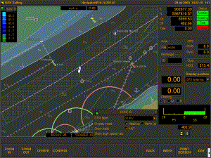

|
Applications and Projects Using FOX [Remove Frame]
|
|
Commercial Applications using FOX
|
XTC was developed by Daniel K. Osawa for Intel Corporation's Enterprise Products Group.

The fleet automation within Boskalis has been implemented on networked
workstations running Linux/X11. All User interfaces (operator consoles,
navigation displays, real-time data monitors, data processing and
visualization) are FOX-based.
It allows to establish an efficient work cycle to perform tests and studies.

 VORHour is a timecard/hour registration program
developed and used by VORtech.
It is written using FOX and is connected via ODBC to a local MySQL Database.
VORHour is a timecard/hour registration program
developed and used by VORtech.
It is written using FOX and is connected via ODBC to a local MySQL Database.
CFD Research Corp. offers a number of
software packages for Computational Fluid Dynamics, Micro-Electro-Mechanical
Systems [MEMS], Semi Conductor Processing, Bio-Medical applications, and other
engineering applications.
Side-by-Side also has the capability of displaying multiple databases simultaneously, simplifying the process of finding discrepancies amongst different formats of the same database.
For more screenshots see: http://www.acusoft.com/products/sbs/gallery.html
CIMPLEST CAPE Workbench is a commercial
application developed by Cimplest Inc. to support
Computer Aided Production Engineering (CAPE).
This application provides an easy to use graphical environment within which
a production engineer can rapidly develop models of manufacturing systems. The
following design and analysis activities are supported: materials requirements analysis,
work load analysis, optimal resource capacity allocation, dynamic lead time analysis,
production/part cost analysis, production scheduling, standard work design,
facilities layout design, process similarity analysis (group technology). Add-on
modules provide additional capabilities: the Performance Explorer module adds
Design of Experiments (DOE) capabilities for parameter sensitivity analysis;
the Performance Optimizer module adds Simulated Annealing (SA) based lead
time and production cost optimization capabilities; the ODBC Data Access module provides the
capability to create user defined scripts for accessing enterprise data sources; and
the WebDAV module provides the capability to publish and share Cimplest models in a
secure and distributed fashion.
The upcoming Apache web server module mod_cimplest will enable
Cimplest models developed within the workbench application to be updated with
data feeds from shop floor monitoring systems and will target real time scheduling
and supply chain integration efforts.
|
Other Projects using FOX
|
 Open Space
Openspace is powerful, flexible, and utterly configurable file manager.
Some of the main features of Openspace are:
support for two panel view and single panel view,
graphically configurable,powerful file recognition system allows you to
configure how files of different types are shown (with colors and icons),
and what happens when you doubleclick them, option for automatic
configutation after first run, extensibility, two types of plugins, Drag
and Drop support compatible with KDE and GNOME applications, fast,
thumbnails support, very fast and comfortable moving through directories,
three icon-display modes: big icons, small icons and details.
Open Space
Openspace is powerful, flexible, and utterly configurable file manager.
Some of the main features of Openspace are:
support for two panel view and single panel view,
graphically configurable,powerful file recognition system allows you to
configure how files of different types are shown (with colors and icons),
and what happens when you doubleclick them, option for automatic
configutation after first run, extensibility, two types of plugins, Drag
and Drop support compatible with KDE and GNOME applications, fast,
thumbnails support, very fast and comfortable moving through directories,
three icon-display modes: big icons, small icons and details.
|
FOX Language Bindings
|
|
FOX Extensions
|
|
|
{kind=link}
{kind=link}
{kind=link}
{kind=link}
{kind=link}